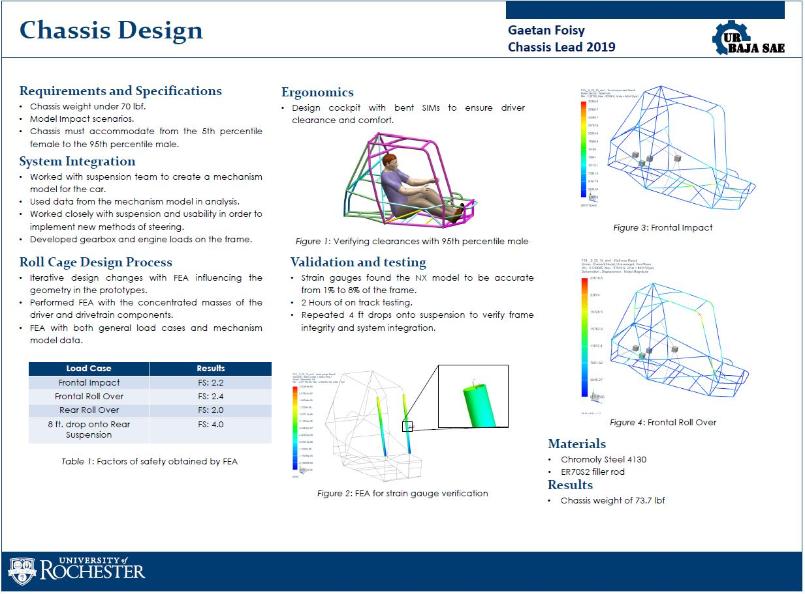

For my year as frame-team lead, I had a few goals in mind.
I wanted my frame to be light, strong, and more reliably manufactured. For more about manufacturing, check out this page.
In order to make the frame light and strong, I needed accurate FEA. I used NX for analysis, because it is great at analysis in addition to being a modeling software. That meant that I didn’t have to keep swapping programs every time I wanted to update my model. Instead of creating a solid model of a frame, I made a wireframe model (a collection of connected lines) and assigned each line the physical properties of the tube it represented. Using wireframe elements with the properties of tubing instead of a solid model greatly reduced the time it took to run the analysis. Where a solid model would take hours, a wireframe-beam model takes seconds. Our Baja car was specially suited for this approach because it is naturally comprised of beam elements, so the simplified beam model is almost identical to the real thing. I would not recommend this method for something not comprised of beams, for example: the cars' uprights. They had to be analyzed as a solid model and melted the suspension lead's laptop.

While this approach to FEA makes sense in theory, it is still a large leap to make when designing parts of the frame as critical as a roll-cage, so I did some tests. When comparing the results from FEA on a solid and detailed model to our wireframe, the results were identical. Unfortunately, in order to compare my FEA to the real car, I had to make the car first.

Thanks to our updated manufacturing techniques and the quality of NX’s solvers, the strain measured in our tests was between 1% and 8% of what we expected and within our factor of safety.

After manufacturing, it was time to weight the car. My model was lighter than last year’s CAD model, but welding can add a lot of weight, so I was nervous. Fortunately, my hard work was validated and it was lighter. With a weight of 73.7 lbs, it is actually the lightest frame in UR Baja history. While my ego may want my record to stand, I still can’t wait to see how they beat it!

A special thanks to Ethan Fahnestock for setting up the strain gagues when I was studying for my dynamics exam.